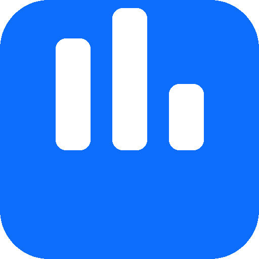

Mes projets
Voici les projets sur lesquels je travaille. Certains sont publics, d'autres plus discrets.

Weak Audio Tracker v1.0
Analyseur audio portable qui scanne, classe et nettoie votre bibliothèque musicale. Il détecte les fichiers de faible qualité (<64 kbps), répare les fichiers corrompus, trouve les doublons et génère des rapports détaillés.
Fonctionnalités principales
Scan récursif (MP3, M4A, FLAC, WAV, OGG, AAC...)
Classification qualité (Bonne / Moyenne / Faible)
Réparation automatique (~77% succès)
Détection des doublons (5 méthodes)
Graphiques et rapports HTML / CSV
Nettoyage en un clic
Interface moderne (mode clair/sombre)
Télémétrie anonyme optionnelle
Téléchargement
Version Android en préparation — beaucoup de demandes, je travaille dessus.
Autres réalisations
Sites web pour particuliers
Réalisations web pour des particuliers et petites structures (sites vitrines, accompagnement technique).
Détails disponibles sur demande.
En conception
De nouveaux projets sont en cours de réflexion. Les annonces viendront ici.
Je ne participe pas à des activités illégales, ni à des actions portant atteinte à la sécurité des systèmes.